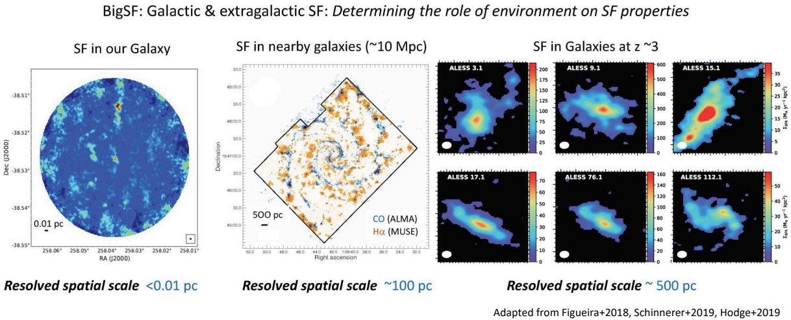
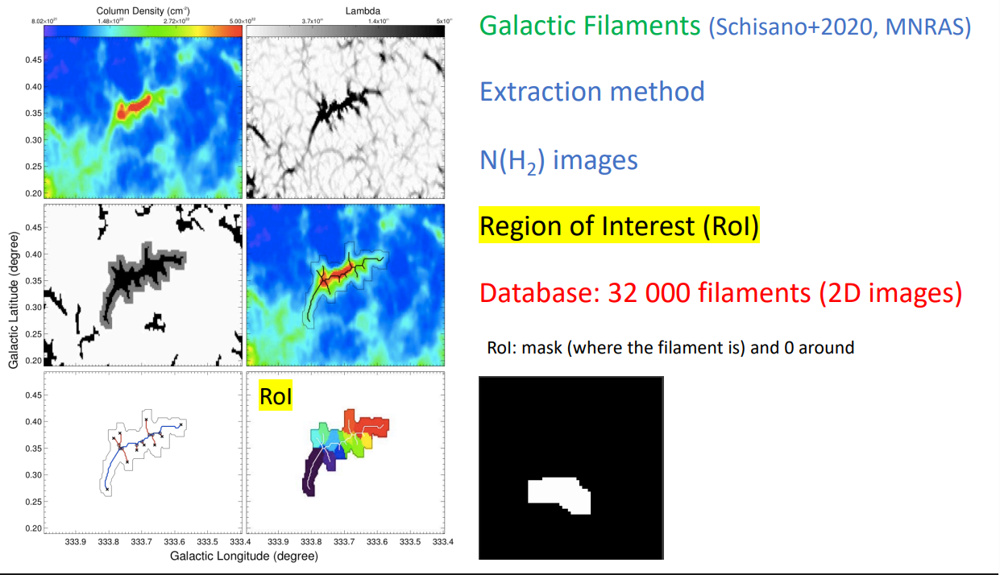
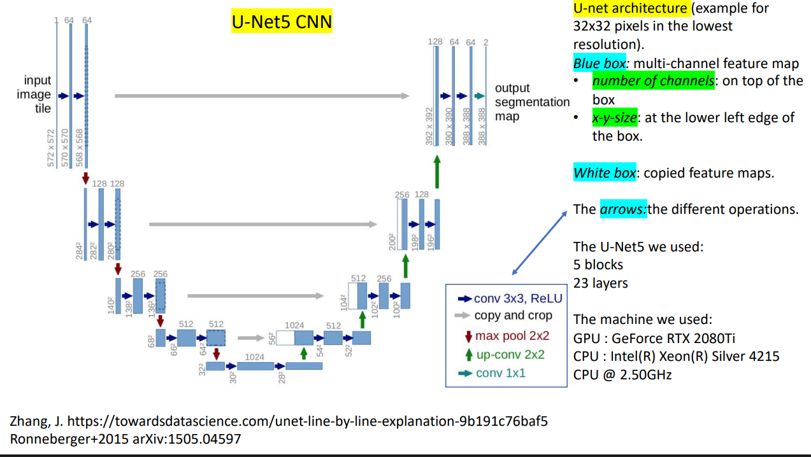

Astrophysics Goals
Star formation as a fonction of the environment (physical conditions)
Bridging the gap between Galactic & extragalactic star formation
Extragalactic SF: Use the built model + change the spatial resolution
How SF depends on the environment in galaxies ?
Galactic & extragalactic star formation

SF components
Filaments, clumps, cores, young stars
2D filament Segmentation

Method: supervised learning
Database : Hi-GAL column density maps: 32 000 filaments + their associated RoI
Images of different size
For each filament: 3 patches (64x64) are taken from 3 random positions around the RoI - Must contain ≥ 20% of the mask
Parts with missing data in the original image are not taken (saturation zones)
Data augmentation: 2 flips and 3 rotations
~ 900 000 patches + their associated RoI
U-Net5 Convolutional Neural Network used for image segmentation
Base: 80% training set and 20% validation set
Python + Keras: 20 epochs for the learning phase
